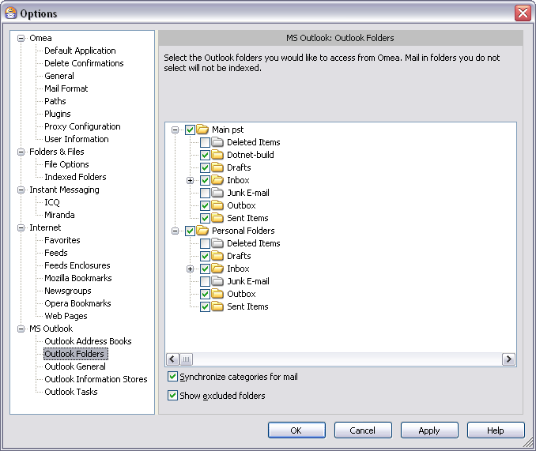

Outlook Folders
You can access this option from the Main menu: Tools | Options: MS Outlook: Outlook Folders
This option page displays your Outlook folders. Each folder has a check box beside it. When a folder is checked, its contents will be indexed by Omea. Any folder not checked is ignored by the indexing engine, and its contents do not appear in the e-mail resource list.
Outlook Folders options in the Options Dialog
Synchronize Categories for Mail
When this option is checked, mail that you create in MS Outlook are automatically imported to Omea Pro. If not checked, mail you create in Outlook are available only there and not in Omea Pro. If the Outlook plugin is installed and activated, this option is checked by default.
Show Excluded Folders
When this option is checked, folders which are not indexed are still shown in Outlook Folders tree. If not checked, folders excluded from indexing will not be displayed in this tree.